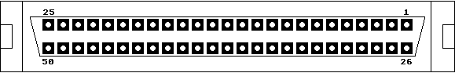

Previous
Next
TOC
Die Pinbelegung der SCSI-Buchse am Falcon030
11 10 Kiloohm Pullup!
32 Datenbit 6
45 Reset
12-14 Not Connected
33 Datenbit 7
46 Message
15-25 und 1-10 GND
34 Datenbit Parity
47 Select
26 Datenbit 0
35+36+40+42 Ground
48 Command/Data
27 Datenbit 1
37+39 Not Connected
49 Request
28 Datenbit 2
38 Termpower
50 I/O
29 Datenbit 3
41 Attention
30 Datenbit 4
43
Busy
31 Datenbit 5
44 Acknowledge

Probleme beim Betrieb von SCSI-Geräten?
Ob der Falcon030 über eine interne (IDE/AT-BUS) Festplatte verfügt,
ist für den sicheren Betrieb des SCSI-Ports belanglos, da der
IDE/AT-BUS Port nichts mit dem SCSI-Port zu tun hat.
Der Falcon ist grundsätzlich das erste/letzte Gerät am SCSI-BUS
(jenachdem, aus welcher Seite man den Bus betrachtet), daher ist der
Falcon030 auch standardmäßig auf dem Mainboard terminiert und zwar
in
passiver Ausführung. Es muß nur noch das letzte Gerät am SCSI-Bus
terminiert werden, im Gegensatz zum TT030 liefert der Falcon030
jedoch die benötigte Speisespannung für TermPwr an Pin 38 der
SCSI-2-Buchse.
Achtung: Die internen Terminatoren werden über eine andere Diode
(D6 - 1N4001) mit Spannung aus dem Falcon030 Netzteil versorgt! Für
den SCSI-BUS ist beim Falcon030 die Diode (D5 - 1N4001) und die
Sicherung F1 - 1 Ampere) zuständig!
Wird der Falcon030 zusammen mit einen anderen Computer an den SCSI-
Bus angeschlossen (was auch erlaubt ist), muß er ZWINGEND einge-
schaltet sein wenn man nicht eine kleine Modifikation am SCSI-Port
durchgeführt hat!
Die Diode D6 auslöten und von der Kathodenseite (der Diode) eine
Drahtverbindung ENTWEDER zu Pin 38 des SCSI-Ports führen ODER eine
Drahtverbindung zu der Kathode von Diode D5 (oder zu der
Sicherung
F1) ziehen und verlöten.
Kapitel Die Pinbelegung der SCSI-Buchse am Falcon030, Seite 1